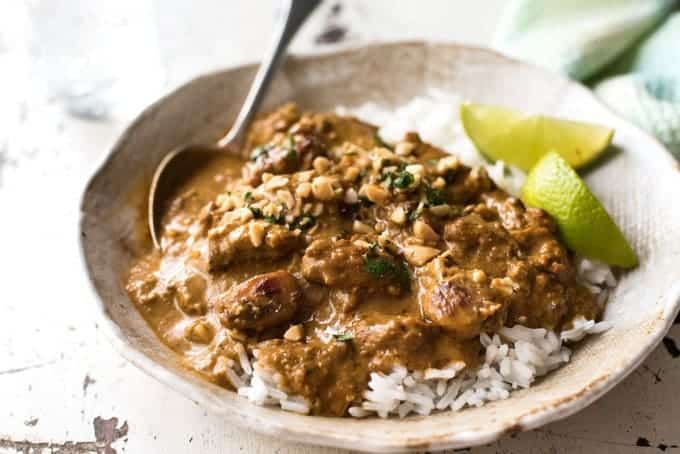

Blog de comida
Las mejores recetas
Preparación Curry Satay
10/01/2020

Ingredientes: para 2-3 personas
- 2 cucharadas soperas de Mantequilla de maní
- 2 dientes de Ajo
- 1 cucharadita de jengibre
- 1 cucharadita de Guindilla roja
- 80 gramos de cebolla blanca
- 1 cucharada sopera de salsa de soja
- 1 unidad de Limón
- 2 cucharadas soperas de Aceite
- 1 pizca de Sal
- 1 pizca de Pimienta
Elaboración:
- Antes de realizar esta receta asiática, el primer paso es alistar todos los ingredientes.
- En una sartén con aceite caliente, sofríe la cebolla cortada en cubos pequeños hasta que esté blanda. Luego, agrega el ajo y el jengibre cortado finamente, mezcla y cocina un minuto mas.
- Agrega un poco de agua y el zumo de limón para seguir con la elaboración de la salsa para pescados. Deja cocinar durante 1 minuto más.
- Es momento de añadir la mantequilla de maní y la salsa de soja; mezcla todo muy bien.
- Para obtener una textura más espesa, licua la salsa con la guindilla roja cortada finamente. Después, agrégala de nuevo a la sartén y deja cocinar un minuto más, rectifica sabor con sal y pimienta.
- Sirve la salsa satay y disfruta. Esta preparación asiática es ideal para acompañar brochetas de todo tipo y pescados a la plancha. Cuéntamos qué te ha parecido y con qué comida has decidido acompañarla.
Preparación Comida China
08/01/2020

Ingredientes: para 4-6 personas
- 1 kilo de pechuga de pollo ( unas 6 piezas grandes)
- 1 lata (400 ml.) de leche de coco
- 1 cucharada de curry en polvo
- 1 cucharada de cúrcuma en polvo
- 1/2 cucharada semillas de cilantro
- 1/2 cucharadita de semillas de comino
- 1 cucharadita de sal
- Un poco de pimienta blanca
Elaboración:
- En una sartén tostamos el cilantro y el comino, cuando empiece a oler bien lo pasamos a un mortero y lo machacamos bien hasta conseguir un polvo fino. Reservamos para luego.
- Cortamos el pollo en trocitos finos y lo ponemos en un bol.
- Le añadimos el cilantro y comino en polvo, el curry, la cúrcuma, la sal, la pimienta blanca y la leche de coco. Lo mezclamos todo bien, lo tapamos y dejamos marinar en la nevera durante al menos 2 horas o mejor toda la noche.
- Lo sacamos y hacemos nuestros pinchitos, colocando unos cuantos trocitos de pollo por pinchito.
- Y ya está listo para la plancha, lo cocinamos bien por ámbos lados y ya está listo para servir acompañado de su salsa Satay.